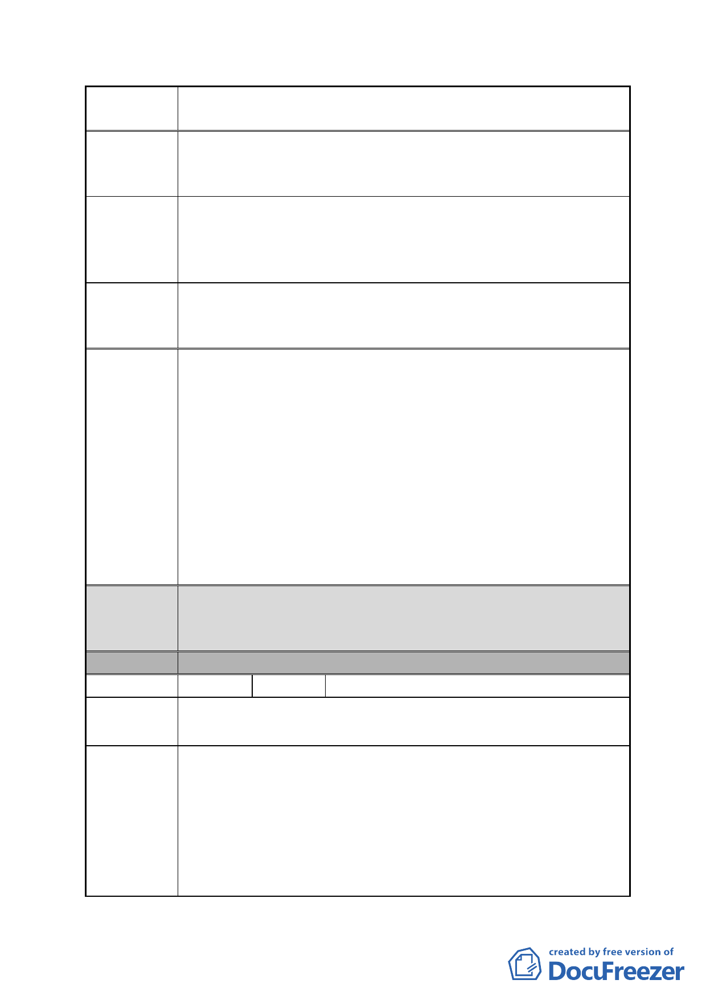

案 名 擬定臺北市南港區鐵路地下化沿線土地細部計畫案
建請於細部計畫案內敘明本計畫範圍內私地產權開發不受公
建議辦法 3 用設施遷移時程之牽制，各項重劃工程得依各開發區域之拆
遷進度分別動工以爭取開發時效。
因本案事涉多個開發街廓，私地產權究否得以分配回原位
陳情理由 4
置？重劃發回比例及配地位置如能早日明朗，對於原有地主
的財產權亦為正面之表彰，有利於完善的建築規劃及整體設
計，創造美好的都市景觀。
敦請以細部計畫指定重劃時程、縮短查估分配作業所需時
建議辦法 4 間，並採分區公告分配結果及原位次集中配地等方式使各區
重劃成果早日定案，發還予所有權人充分利用。
1.有關劃定更新地區之部分，考量本案係指標性更新案件之
ㄧ，故本案主要計畫業將本案計畫範圍全部劃定為更新地
區。並得適用都市更新條例相關之容積獎勵（包含時程獎勵）。
市府回應
說明
2.因本計畫係採跨區市地重劃方式進行開發，期望藉此將各區
應負擔之公共設施用地集中於 C 區供作北部流行音樂中心開
發使用，故本案恐無法由各區分別依拆遷進度辦理重劃。又
本計畫範圍內公、私有地上物將由本府地政處一倂拆除，理
應無陳情人所謂公用設施拆遷時程牽制之問題。
3.又市地重劃後續作業需依「市地重劃實施辦法」等相關法令
規定辦理，故本案無法以細部計畫規定排除相關法令之適用。
都委會
決議
分區
編號
陳情地點
陳情理由
1.本陳情地點屬修正後細部計畫範圍，本地區主要計畫業指定
為「策略性再開發地區」。
2.同意以市府回應說明辦理。
C區
6 陳情人 大華鋼鐵機械股份有限公司
南港路二段 75 號（南港區南港段四小段 484、487、488、490、
505 地號）（第三種工業區）
貴委員會在 98 年 8 月 11 日臺北市都市計畫委員會第 598 次
委員會議時曾說過參加市地重劃者其回饋比例一定不會比南
港輪胎多。
98 年 12 月 10 日晚上 7 點在臺北市南港區公所 10 樓公展說明
會時，與會南港區立委、市議員們在聽完一些陳情者激烈的
陳述後，終於傾向要免除低坪數土地重劃者的土地回饋。
在場的陳情者更希望能提高容積率，比照板新特區提高容積
- 20 -